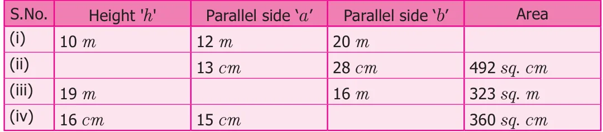

- 1.Find the missing values.

- 2.Find the area of a trapezium whose parallel sides are 24 cm and 20 cm and the
distance between them is 15 cm.
- 3.The area of a trapezium is 1586 sq. cm. The distance between its parallel sides is
26 cm. If one of the parallel sides is 84 cm then, find the other side.
- 4.The area of a trapezium is 1080 sq. cm. If the lengths of its parallel sides are
55.6 cm and 34.4 cm, find the distance between them.
- 5.The area of a trapezium is 180 sq. cm and its height is 9 cm. If one of the parallel
sides is longer than the other by 6 cm, find the length of the parallel sides.
- 6.The sunshade of a window is in the form of isosceles trapezium whose parallel sides
are 81 cm and 64 cm and the distance between them is 6 cm. Find the cost of painting the surface at the rate of ` 2 per sq. cm.
- 7.A window is in the form of trapezium whose parallel sides are 105 cm and 50 cm
respectively and the distance between the parallel sides is 60 cm. Find the cost of the glass used to cover the window at the rate of ` 15 per 100 sq. cm.
Objective type questions
- 8.The area of the trapezium, if the parallel sides are measuring 8 cm and
10 cm and the height 5 cm is
- (i)45 sq. cm (ii) 40 sq. cm (iii) 18 sq. cm (iv) 50 sq. cm
- 9.In a trapezium if the sum of the parallel sides is 10 cm and the area is 140 sq. cm,
then the height is
- (i)7cm (ii) 40 cm (iii) 14 cm (iv) 28 cm
- 10.When the non-parallel sides of a trapezium are equal then it is known as
- (i)a square (ii) a rectangle
- (iii)an isosceles trapezium (iv) a parallelogram